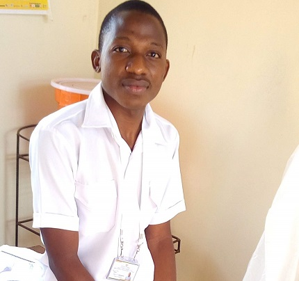
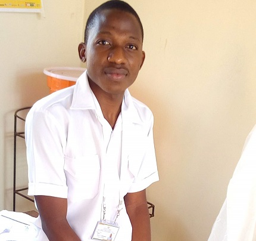

Adérito Félix Quinamine, de nacionalidade moçambicana, filho de Alfane Quinamine e de Maria de Lurdes Amurane, nascido aos no distrito de Chiúre, província de Cabo Delgado. Passado menos de um quinquénio após seu nascimento, sua família mudou para Pemba, cidade onde Adérito passou sua infância e adolescência.

Em 2003 foi inscrito na Escola Primária de Mulapane, onde frequentou desde a 1ª à 7ª classe do Sistema Nacional de Educação (SNE).
Em 2010 matriculou na Escola Secundária de Pemba, na qual frequentou até a 12ª classe em 2014 e em Março desse último ano frequentou o curso de Informática Básica aplicada na óptica de utilizador na GAJM Consultores, Lda.
Em 2015 fez inscrição e começou a cursar Inglês no Instituto de Línguas de Pemba e no mesmo ano concorreu para uma das vagas do curso de Técnicos de Medicina Geral lançadas pelo Centro de Formação do Pessoal de Sáude de Pemba.
Em 2016 começou a frequentar o curso de Técnicos de Medicina Geral (motivo que o levou a interromper o curso de Inglês) até , mês em que graduou e, no mês seguinte, participou do concurso do tipo entrevista lançado pela Direcção Provincial de Saúde de Cabo Delgado para nomeação para o Quadro dos Funcionários e Agentes do Aparelho do Estado.
Em Dezembro saiu sua nomeação provisória e em Março do ano seguinte (2019) foi colocado para trabalhar no distrito de Mocimboa da Praia.

Adérito e a Tecnologia
Adérito teve seu primeiro contacto com um computador como usuário em 2013, ano em que recebeu um laptop da marca acer oferecido pelo seu irmão. Inicialmente encarava o seu laptop como fonte de diversão mais do que fonte de aprendizagem e passou os 3 anos seguintes imerso principalmente no mundo de videojogos.
Em 2018, por curiosidade, pesquisou sobre Programação de computadores e após consideráveis consultas sobre a vasta gama de opções encontradas, interessou-se mais pelo Desenvolvimento Web (JavaScript), embora a maioria dos conceitos básicos de programação tenha aprendido em linguagem Python. Alguns dos canais do Youtube que contribuiram para o seu conhecimento básico incluem CursoEmVideo e CFBCursos.